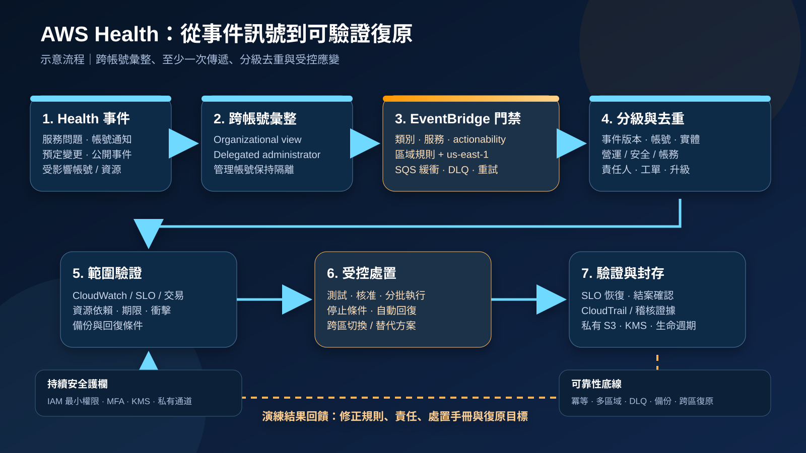

AWS Health：服務事件可視性與跨帳號應變
AWS Health 提供與帳號、服務及資源相關的營運事件與預定變更資訊。它能指出哪些帳號或資源可能受影響，但不會自動完成業務衝擊判定、修復與復原；可靠運作仍需要跨帳號彙整、分級路由、去重、責任人、處置手冊與結案驗證。
作者：Dr. William｜查閱與發布：2026-11-17
服務定位
AWS Health 提供 AWS 服務事件、帳號通知、預定變更與可能受影響資源的個人化資訊。團隊可在 Health Dashboard 檢視事件，也能透過 AWS Organizations 的組織檢視彙整多帳號事件，再使用 EventBridge、AWS User Notifications 或 AWS Health API 串接通知與應變流程。
CloudWatch 觀察工作負載指標、日誌與告警；CloudTrail 記錄管理面活動；Service Health 顯示公開服務狀態；AWS Health 則補充「這個 AWS 事件是否與特定帳號或資源相關」。完整事件判斷應把這些訊號與應用程式 SLO、交易失敗、依賴關係及客戶影響一起分析。
核心概念與服務邊界
事件與可視性
- 事件類別：常見包含 issue、accountNotification 與 scheduledChange。
- 事件狀態：用於區分開啟、即將發生、進行中或已關閉等生命週期。
- Actionability：協助辨識是否需要採取動作，例如預定生命週期事件。
- 受影響實體：事件可能列出資源識別資訊與處理狀態。
- Personas：可依營運、安全或帳務等受眾安排通知責任。
- 公開與個人化資訊：公開事件不能取代帳號層級的資源影響檢查。
彙整與自動化
- Organizational view：啟用後集中檢視組織內後續收到的 Health 事件。
- Delegated administrator：將日常檢視交由成員帳號，降低管理帳號暴露。
- EventBridge：依事件類別、服務、動作需求與帳號路由到下游目標。
- User Notifications：提供電子郵件、聊天與行動推播等通知管道。
- Health API：支援程式化查詢，但使用資格受 AWS Support 方案限制。
- 保留期限：組織事件可用期間有限，長期證據需另行封存。
AWS Health 事件可能晚於最初症狀，也可能在調查期間更新內容與受影響實體。EventBridge 採至少一次傳遞語意，處理器必須允許重送與重複事件；不能把收到一則通知視為所有相關事件都已完整抵達。
適合與不適合的使用情境
適合
- 集中檢視多帳號的 AWS 服務問題、預定維護、生命週期變更與安全通知。
- 找出受影響帳號與資源，將事件分派給正確的服務擁有者。
- 以 EventBridge 將需要動作的事件送入工單、事件管理、SQS 或 Lambda 流程。
- 依營運、安全與帳務 persona 建立不同通知訂閱與升級路徑。
- 把 Health 事件與 CloudWatch、CloudTrail、CMDB、標籤及應用程式遙測交叉比對。
- 建立預定變更行事曆、到期追蹤、證據保存與結案稽核。
不適合或不能單獨完成
- 只看公開 Service Health 就判定個別帳號與資源沒有受到影響。
- 取代應用程式監控、合成測試、日誌、追蹤、SLO 與使用者回報。
- 收到事件後未經範圍驗證就直接執行大規模重啟、切換或刪除。
- 把電子郵件文字解析當成唯一自動化入口，忽略格式與寄送機制可能變更。
- 假設事件只會送達一次，或以單一區域規則涵蓋所有可能事件。
- 把 90 天內可查詢的事件當成長期稽核、法遵與災難復原證據庫。
示意故事案例：跨帳號維護事件的受控處置
以下為示意案例，不代表特定企業或正式部署。 一家線上服務公司使用 AWS Organizations 管理正式、測試、資料與安全帳號。某次 AWS Health 發布預定生命週期事件，指出數個帳號中的特定資源需要在期限前處理。中央平台團隊透過 delegated administrator 檢視組織事件，而不是讓日常維運人員進入管理帳號。
EventBridge 規則只挑選需要動作的 accountNotification 與 scheduledChange，先送入 SQS 緩衝，再由處理器依事件識別資訊與更新時間去重。系統利用帳號、標籤與資源擁有者資料建立工單，安全通知另送安全團隊；未知區域事件由美東（維吉尼亞北部）規則補捉。
服務擁有者先確認受影響資源、依賴關係、維護期限、備份與回復條件，再於測試環境驗證處置步驟。正式變更分批執行並監控 CloudWatch SLO。事件標示結束後，團隊仍以應用程式指標驗證恢復，將事件快照、工單、核准、變更與復原結果封存到加密的私有儲存，避免 Health 保留期限成為稽核缺口。

建置與運作流程
- 盤點帳號、組織單位、關鍵服務、資源擁有者、SLO、聯絡人與事件分級標準。
- 在 AWS Organizations 確認 all features、trusted access 與管理責任邊界。
- 啟用 AWS Health organizational view；既有事件不會回溯納入，應記錄啟用時間。
- 指定 delegated administrator，讓營運團隊不需日常使用管理帳號。
- 以 IAM Identity Center／聯合身分、MFA 與短期工作階段授予檢視、組織設定及自動化分離權限。
- 建立各帳號與組織層級 EventBridge 規則，依 eventTypeCategory、actionability、service 與 persona 篩選。
- 在工作負載所在區域建立必要規則，並在美東（維吉尼亞北部）補捉無法判定區域的事件。
- 將事件先送入 SQS 或等效緩衝，設定重試、死信佇列、保留期限與失敗告警。
- 以事件 ARN、事件更新時間、帳號與受影響實體建立冪等及版本控制。
- 把帳號、組織單位、標籤、CMDB 與服務擁有者映射到工單與升級路徑。
- 分離營運、安全、帳務與公開事件通知；公開事件另以 EventBridge 或使用者自訂通知處理。
- 收到事件後驗證受影響資源、實際服務症狀、依賴關係、期限與業務衝擊。
- 依核准的處置手冊執行備份、測試、分批變更、監控與回復。
- 以 CloudTrail 記錄組織檢視、delegated administrator、EventBridge 與下游組態變更。
- 把事件內容、更新歷程、工單、核准與結案證據封存到私有且加密的儲存。
- 事件關閉後仍以 CloudWatch、合成測試及交易指標確認服務恢復。
- 定期演練通知遺失、重複傳遞、區域規則失效、下游積壓與跨區復原。
成本、可用性與維運考量
AWS Health Dashboard 與 organizational view 可供各 AWS Support 方案使用，組織檢視本身不另收費；AWS Health API 需要符合官方文件列出的支援方案。實際方案名稱與權益可能調整，採用前應依查閱日最新 Support 文件確認。EventBridge、SQS、SNS、Lambda、User Notifications、自訂聊天整合、CloudWatch、CloudTrail、S3 與 KMS 仍依各服務用量計費。
組織檢視只納入啟用後送達的事件，組織事件可用期間最長 90 天且不可提高。需要長期稽核、趨勢與法遵證據時，必須另行封存；封存流程也要監控失敗、重送與資料生命週期，不能只建立一條未驗證的 EventBridge 規則。
EventBridge 以至少一次方式傳遞 Health 事件，處理器應可安全重跑。事件具有區域性，但無法判定區域的事件可能落在美東（維吉尼亞北部）；只在一個應用區域建立規則可能漏接。高可用設計應包含多區域規則、緩衝佇列、死信佇列、健康檢查、替代通知管道與人工巡檢。
AWS Health 特有資安風險與控制
- 跨帳號可見性過大：組織檢視可能呈現帳號、聯絡資訊與受影響資源；使用 delegated administrator、IAM 最小權限、SCP、permission boundary 與定期 access review。
- 管理帳號暴露：日常營運不直接使用管理帳號；將檢視與事件路由委派到受控成員帳號。
- 長期身分資料：人員採聯合身分、MFA 與短期工作階段；工作負載以角色取得必要權限，不配置長期存取金鑰。
- 通知偽造與釣魚：自動化以 AWS Health、EventBridge 或 API 的結構化事件為準；電子郵件只作提示，敏感操作回到受控主控台或工單驗證。
- 重複事件造成重複變更：依事件識別資訊、版本、帳號與受影響實體實作冪等，所有破壞性動作另設人工核准。
- 事件更新覆蓋：保存更新時間與版本，避免舊事件延遲抵達後覆寫較新的狀態。
- 區域規則漏接：依工作負載區域部署規則，並在美東（維吉尼亞北部）處理無法判定區域的事件。
- 公開事件缺口：AWS managed notifications 不提供公開事件；另建 EventBridge 或使用者自訂通知，並保留 Service Health 人工檢視。
- 下游權限過大：EventBridge target role、Lambda、SQS、SNS 與工單整合只授予必要動作及資源範圍。
- 公開端點與網路出口：下游處理器置於受控網路，限制安全群組、端點政策與出口；接收 webhook 時驗證來源並隔離公開入口。
- 事件資料外洩：日誌、工單與聊天訊息最小化帳號及資源識別資料；禁止把機密值或認證資訊放入標籤、自由文字與外部 URL。
- 加密邊界錯置：SQS、SNS、S3、日誌與封存資料依分類使用 KMS，限制 key policy、grant、跨帳號解密與管理者權限。
- 外部整合機密：聊天、工單或 webhook 所需機密存於 Secrets Manager／Parameter Store，定期輪替且不寫入程式碼與事件內容。
- 稽核鏈不足：以 CloudTrail 監控 Health 組織設定、EventBridge 規則、目標、角色與下游組態；CloudWatch 告警未授權變更、積壓與死信。
- 保留期限誤判：將 90 天事件視窗與正式證據保存分開，封存桶保持私有、啟用 Block Public Access、版本、生命週期與刪除保護。
- 事件驅動誤修復：Health 事件只是輸入；先檢查備份、相依性、維護窗口與回復條件，再分批執行。
- 復原資訊不足：處置手冊包含跨區替代方案、DNS／流量切換、資料一致性、回復順序與演練證據。
共同責任邊界
AWS 負責 AWS Health 受管服務及其底層基礎設施，產生並提供公開與帳號個人化事件、組織檢視、API 與 EventBridge 整合能力，並維護官方事件結構與服務端安全。AWS Health 提供事件資訊，但不保證每個工作負載症狀、業務依賴與客戶影響都能由單一事件完整描述。
客戶負責啟用組織檢視、delegated administrator、IAM 最小權限、MFA／短期工作階段、網路隔離、公開存取、KMS、Secrets Manager／Parameter Store、CloudTrail／CloudWatch、事件規則、通知管道、去重、資料保留、責任分派、處置手冊、備份與跨區復原；也負責驗證事件是否實際影響應用程式，以及處置完成後是否恢復 SLO。
上線與維運可執行檢查清單
- □ 帳號、組織單位、關鍵服務、資源擁有者與事件責任人已盤點。
- □ AWS Organizations 已啟用 all features，trusted access 變更已核准。
- □ Organizational view 已啟用，啟用時間與不回溯限制已記錄。
- □ Delegated administrator 已設定，管理帳號不作日常操作入口。
- □ 檢視、組織設定、規則管理、工單與處置權限已分離。
- □ 人員使用 IAM Identity Center／聯合身分、MFA 與短期工作階段。
- □ EventBridge 規則涵蓋 issue、accountNotification、scheduledChange 與必要 actionability。
- □ 工作負載區域及美東（維吉尼亞北部）的補捉規則均已測試。
- □ 公開服務事件另有 EventBridge、使用者自訂通知或人工巡檢管道。
- □ SQS 緩衝、重試、死信佇列、積壓告警與失敗重播已演練。
- □ 事件處理器可依識別資訊、版本、帳號與資源冪等執行。
- □ 舊事件不會覆寫較新狀態，事件更新歷程可追溯。
- □ 帳號、標籤、CMDB、服務擁有者與工單路由已對照驗證。
- □ 營運、安全、帳務與管理層通知有不同分級與升級路徑。
- □ 電子郵件不作破壞性自動化唯一來源，敏感操作需二次驗證。
- □ EventBridge target role 與下游服務採 IAM 最小權限。
- □ 封存、佇列、通知與日誌保持私有，公開存取已封鎖。
- □ KMS key policy、grant、跨帳號解密與金鑰管理責任已審查。
- □ 外部整合機密存於 Secrets Manager／Parameter Store 並輪替。
- □ CloudTrail 可稽核組織檢視、規則、目標、角色與設定變更。
- □ CloudWatch 可告警規則失效、處理錯誤、積壓、死信與通知失敗。
- □ 事件、工單、核准、變更與結案證據會在 90 天前完成封存。
- □ 處置手冊包含備份、測試、分批、停止條件、回復與跨區方案。
- □ 事件關閉後仍會以 SLO、交易、合成測試與使用者影響確認恢復。
- □ 每季至少演練一次漏接、重複、延遲、區域故障與下游失效。
AWS 官方一手來源
- What is AWS Health?（查閱：2026-11-17）
- Concepts for AWS Health（查閱：2026-11-17）
- Viewing your account events in the AWS Health Dashboard（查閱：2026-11-17）
- Aggregating AWS Health events across accounts（查閱：2026-11-17）
- Viewing organizational view（查閱：2026-11-17）
- Organizational view and delegated administrator access for EventBridge（查閱：2026-11-17）
- AWS Health and AWS Organizations（查閱：2026-11-17）
- Monitoring events in AWS Health with Amazon EventBridge（查閱：2026-11-17）
- Configuring EventBridge rules for AWS Health（查閱：2026-11-17）
- Manage AWS Health notifications in AWS User Notifications（查閱：2026-11-17）
- Identity and access management for AWS Health（查閱：2026-11-17）
- Security best practices for AWS Health（查閱：2026-11-17）
- Data protection in AWS Health（查閱：2026-11-17）
- Logging AWS Health API calls with AWS CloudTrail（查閱：2026-11-17）
- AWS Health API Reference（查閱：2026-11-17）
- AWS Shared Responsibility Model（查閱：2026-11-17）
內容說明
本文依查閱日可用的 AWS 官方文件整理，作為基礎學習與架構討論材料；實際作業仍須依最新事件結構、Support 方案、區域行為、Organizations、IAM、EventBridge、User Notifications、SQS、CloudTrail／CloudWatch、KMS、封存與組織事件應變程序調整。